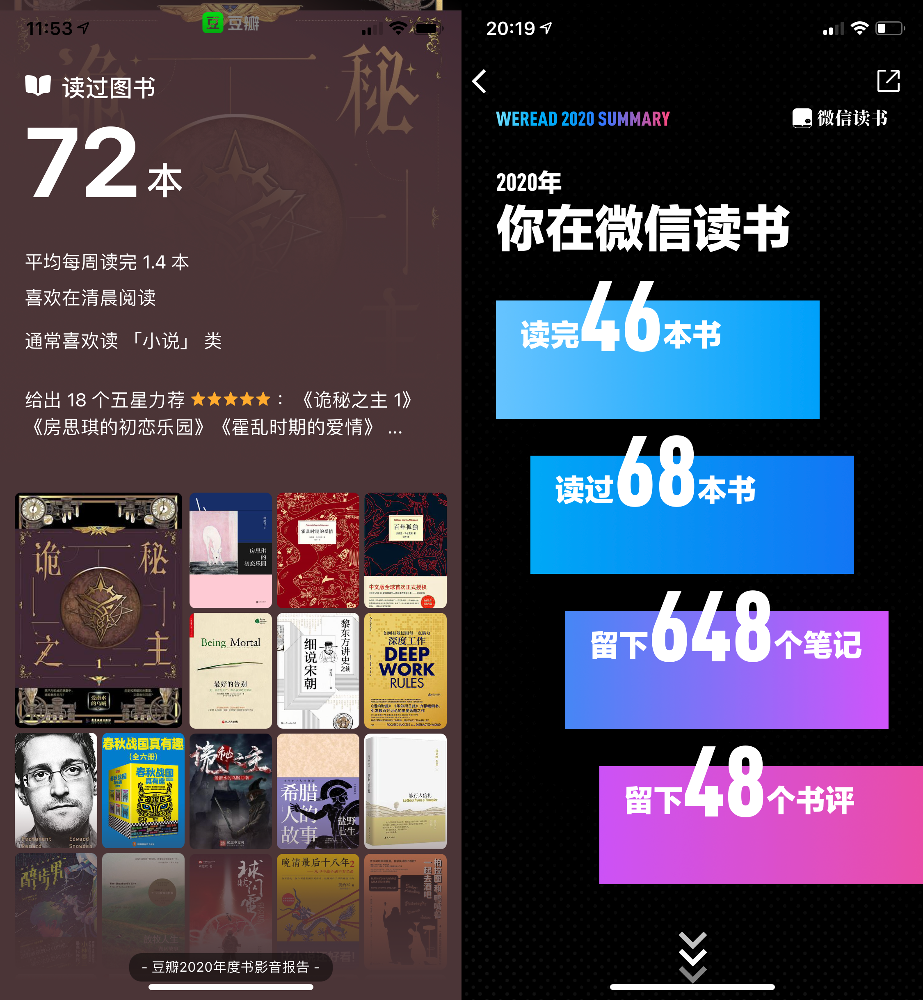
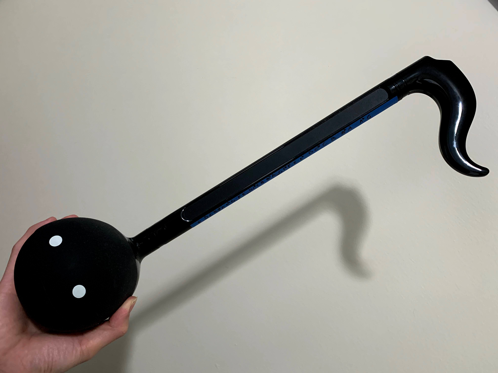

垂死病中惊坐起，笑问客从何处来——在人生的米字路口。
↑ 今年的 BGM 选的是野孩子的《竹枝词》，多个声部配合在一起，连绵不绝的歌词一波还未平息、一波又来兴起，层峦叠嶂的人声复合体一阵阵推来，给我纷乱的内心以巨大的慰藉。
回顾 & 远眺
魔幻的2020过去了，并不想念它。无关疫情，我只是已经 “burn out” 了。
做出了一些成果，但当我终于意识到已经没有精力与时间去达成剩下遥遥无期的目标时，我并没有感觉很难过，反而有种大大的解脱。嗯，不读了。不读啦。
自诩也摄入过许多心理学的知识，但当时不时陷入到情绪上的低谷时，还是常常处于不自知的状态。应该没到 depression 的地步，anxiety 多少会有一些。噢那疫情还是造成了很大影响的——向外的交流无论从带宽还是流量上都比之前更少了。陷入自我的循环执念后，不自觉地就会更加忽视家庭，同时，
- 朋友圈从5月开始就未曾再更新过（直到前天），连点开翻翻的意愿也没剩下多少，更别提曾经开启的播客和公众号了；
- 秋天一时兴起买来的望远镜也在一次不成功的天文观测后就束之高阁，没有动力拼起来再试一次了；
- 身体也胖了一些（quān），因为锻炼中断了大半年，直到几周前才重新捡起来，也因为更加频繁的熬夜，以至于不能再对猝死的可能性不屑一顾了。
垂死病中惊坐起，现在的我并不讳言这些。并不后悔，但总归会觉得有些遗憾，间或夹杂着对人生米字路口的期待与不安。至于未来，我想以我之所学帮助人类更好的剥削机器、从而减少人类之间的剥削。🙏
希望2021和气致祥，万象更新。
阅读——想要少待的避风港
阅读向来是我的舒适区与避风港，2020的状态下更是变本加厉。一共读完了72本书，冲击历史高位。依旧是社科类为主，虚构类为辅。除了继续主力的 app 微信读书之外，还用了好一段时间 Libby ——这个 Bing 发现的新 app，能够借阅村里图书馆有限的电子书+有声书资源，它与微信读书、喜马拉雅一起构成了听书第一梯队，微信读书 + Kindle + Kybook（手机上的 epub/djvu 阅读器）成为阅读的第一梯队。
| 2015 | 2016 | 2017 | 2018 | 2019 | 2020 |
|---|---|---|---|---|---|
| 58 | 79 | 64 | 25 | 53 | 72 |

春天建了一个「编年世界补完计划」的书单，根据时间线解锁历史片段（已完成部分在这个豆列里，对应的乱序篇在这里）。但到了年末，我忽然觉得有些空虚，对整理好的书单失去了许多兴趣，编年书单就算都看完了又能怎样呢，热情转移了一些。继而重新燃起了技术书籍的兴趣。Humble Books 上时不时有程序猿书籍大包，以前只是主要在上头买游戏，感觉亏了好多。
在这样周期性的反思下，今年的选取标准比去年更严格了，全年回顾下来我最喜欢的作品只有下边这些。
文字
《旅行人信札》首当其冲。陈嘉映老师这种「质直准确干净」的文字实在是太符合我的口味了，专门写了笔记。40年前游历大半个中国的游记，把我每次旅游归来的心境描述得淋漓尽致，也恰好是我读完这本书的恍惚感觉：
躺在铺位上，觉得轻松，从这两天的奔忙中喘定一口气。但不知为什么，当站在甲板上等待发动，当江风吹进舷窗，却有一种忧郁感；像什么呢？像我们站在青春的边缘，感觉到时间的离心力正在把人们抛出去，抛出动荡、冲击、炫目的人生中心，抛向安稳的常规生活。就是那种即将寂静下来的惜别之情吧。
另一本在文字上击中我的是诗集《月光落在左手上》。由此去翻了其它的一些现代诗，却都没能成功共振。只有余秀华老师，只有这一本，只在第一次读的午后窗台上，胸口的情绪被催动涌出，可见诗在合适的情境下出现也是一种缘分。
说到文字，今年（才）第一次读了马尔克斯的《百年孤独》和《霍乱时期的爱情》，很喜欢，原因却比较另类——马尔克斯喜欢写全名😂。因为这个，喜马拉雅上的有声书就不像其余多用他/她/它的名著那样听着容易走丢，所以终于开始看了才发现，这两本早就加到单子里的名著比预想中好读多了。
历史
虞云国老师的《细说宋朝》是2020年看完的历史类图书里最喜欢的。抽丝剥茧，有机融合了纪传体和重要事件脉络，还介绍了政治军事制度与民间文化科技，面面俱到，五脏俱全。大宋、大怂的民间文化是真的发达，顶层的统治阶级也是真的软怂。
- 说到宋朝，《绍宋》是年内看过的最好的网络小说，真の历史爽文。面对聚是一坨屎、散是满天星的失败主义大怂群臣，面对节节紧逼的大金「蛮族」，没有什么系统，没有什么降智光环，一步一个脚印，前几卷每卷以一场大战结尾拉到高潮，节奏太棒了。至于其它网络小说就偶有亮点，但追的不多就没资格谈了，连乌贼的新书也暂时没有意愿追着看了。
若是将还在读（1月）的作品一并考虑进去，杨照老师的《讲给大家的中国历史01》绝对要挤进 Top-2，这也算是提前备战2021年结了。且先别被流俗的书名干扰，杨照老师从考古学的进展出发，结合史料讲述更新的中国历史观念。看完第一部分明清以来的历史观念变化我就 Orz，看完第二部分结合史料讲述新石器时代与夏商周时代我就 Oπz，当成了睡前故事念给 Bing 听。
除此之外，觉得不错的历史类书籍还有：
- 《希腊人的故事》，出自盐野七生老师，依旧是《罗马人的故事》系列以来的絮絮叨叨风格。
- 《春秋战国真有趣》，有些虎头蛇尾的大众历史读物，和《东周列国志》有相似的脉络，春秋细节丰富，到了战国篇就陡然提速了。
- 《晚清最后十八年2》。两年前看过这个系列的第一本，印象很好，这本也不错，还有3、4一直攒着没看。
非虚构
年中读了斯诺登的自传《Permanent Record》，很喜欢。从身为技术宅的青少年到跳级上本地大学避免中学处分，从参军入职 CIA 到意外发现美国政府监控项目痕迹到公之于众继而逃亡的决心，细节非常多。看到以创建定制化 news feed 的名目巧妙收集证据，看到周密的计划以及行动之前如遗愿清单一样地告别女友，实在是有血有肉👍。中文版有删减，因而斯诺登自己在推上放出了中文版。看了下其实真没啥好删的。微信读书上的版本里，删减部分在书中基本都用省略号……高亮了出来，微信读书上的网友们也在评论中热心补全了😂。
另一本喜欢的非虚构类是《最好的告别》，讨论衰老、养老、临终医疗，共鸣强烈。以后滚滚老了、爸妈老了、我们自己老了的时候，我也不希望牺牲生命质量来换取生命长度。🙏
影音
根据豆瓣记录，2020年看了17部电影、33部剧集、13部综艺，都是和 Bing 一起看的。在疫情与心态的双重影响下，电影数量显著降低，剧集数量有增加，总量显著下降，而花在B站的时间可一点没少（B站股票加油💪）。
| 2015 | 2016 | 2017 | 2018 | 2019 | 2020 |
|---|---|---|---|---|---|
| 124 | 111 | 115 | 75 | 76 | 63 |

影、剧
又翻了一遍才确认，整个2020年，我竟然没能挑出一部觉得真是好呀的电影，这从另一方面佐证，过去一年的观影数量确实是少多了。
最喜欢的剧当之无愧要数《隐秘的角落》！电影般的质感，全员在线的演技，没有一个拖后腿的槽点，舒服！这之外，
- 《半泽直树2》果然是名副其实的大爽剧！名侦探半泽剧情一波接一波根本停不下来。
- 《孤注一掷：热刺》是个惊喜，看鸟叔带团队，看现代足球俱乐部的日常管理各种细节。开拍的时候谁知道会有鸟叔、伤病潮、新冠、内讧等等波澜起伏呢。
- 《Upload》所呈现出来的海量海量海量设定细节令人眼前一亮，剧情就一般般了。
B站5月上线了四大名著的老剧，我们就着弹幕看了三国水浒和一部分的西游红楼。B站的弹幕真是把这些老剧的观影体验带到了一个船新的高度！
综艺
综艺方面最大的惊喜在秋天爆发——《说唱新世代》。只要忍过第一期的上半集，后边完完全全都是宝藏。这种能真正生根发芽本土化，带来更大格局视野的嘻哈才是发展方向嘛。
另一个我们都很喜欢的节目是《守护解放西2》，难以想象我们居然在19年漏过了《守护解放西》。这种贴近生活的满满烟火气太令人满足了，B站做节目有一手哦。
Bing 还很喜欢《浪姐》，而节目不免有些高开低走。这才不到半年，浪姐2就又上线了，不禁令人想起声入人心😓。
《乐夏2》曾经我是很期待的，但上线之后我们都有点失望，觉得没有那么真诚的感染力了，看看《德夏》就够了。
2020年，情绪的出口改小了几扇窗，也扩了半道门。在音乐方面更大的变化其实源自年底的一件新乐器：

作为生日礼物，Bing 送了我一个电音蝌蚪（Otamatone），从小五音不全但就爱跟着歌哼哼的我爱不释手！乐器本身偏娱乐，手指能按压的区域也是个连续区间难以精确校准，但真的很容易上手！借此机会，终于摆脱了只会看简谱的蒙昧，从欢乐颂到国际歌（的前两句），就算调不准还是很有成就感！这么说来，几年前我的音乐素养真是低啊，朗朗上口的大众和弦就能满足。
播客 / Podcast
在有声书的时间争夺之下，2020年我的播客收听量有着显著的减少，但从井户端会议《回望2020❸【80后传媒史】播客江湖2020》这期来看，整个播客行业的发展似乎正处在如火如荼的阶段。谈论中总结的很棒，如果只有谈话模式的播客，那么其天然就会内卷——新下凡的大佬一定会挤占底下的人的空间。这一点我也有体会，对于提供的信息、情感都不如优质有声书的播客节目，我何不去听沉淀好的书呢。
行业如火如荼的另一个征兆是出现了小宇宙这样的 app，虽然其在播放、补番等方便程度上还有很大的进步空间，但终于有了个不错的评论社区。于是这篇里提到的播客链接就都换成了小宇宙链接。小宇宙是即刻团队做的，即刻曾经也是我很喜欢的 app 呀，可惜在或主动或被动剥离工具属性、想要做个社区之后就渐行渐远了。
去年我还列举了一大批的播客列表，今年应该会精简不少：
最强烈情感提供者——《谐星聊天会》。自从谐聊19年上线伊始，我就是节目的忠实粉丝了，没心情听其它东西的时候我会把谐聊的往期再翻出来听，有些梗都记住了还是会哈哈哈哈哈，谁不喜欢天花板奇墨老师以及插话家郝雨老师呢。安利单口不能设置太高的预期，就不放单期了。
最强烈信息提供者——《忽左忽右》。能找这么多广谱的社科专业嘉宾来聊各种东西，真令人向往啊，以至于对 JustPod 旗下出品的播客都有很高的信赖和期待。
比如他们旗下的另一档《鼓腹而游》也很棒，《006｜中女崛起与让人哭笑不得的「第三性」》中就谈到对于中国乡土作家笔下对中年女性的描写的一些观点，都是我之前不了解觉得非常新鲜非常优质的讨论👍。
再比如他们旗下的另一档《东亚观察局》，补上了东亚政治文化的盲区。《东亚观察局》是在 Bing 新发现的《井户端会议》之后发现的，井户端的80后传媒史系列特别棒，比如《春晚篇》，再如《蔡康永篇》。
在具体各个领域的强烈信息提供者还有：
- ML 前沿访谈：TwiML AI
- 风投行业趋势分析：疯投圈
- 广义历史类别：天书广播、路书
- 时间顺序串讲历史的：野史下酒（已经讲到盛唐的戛然而止了）
- 介绍文明衰亡史的：Fall of Civilizations
- 科学史：科学史评话
- 能提供核心观点需要辩证接收的：翻转电台
以及人文类的故事 FM和迟早更新。最后，还有啥都能聊的日谈公园、大内密谈、机核网 GADIO。
游戏
疫情宅在家里之后，Bing 和我玩游戏的机会就更多了，都是些本地双人合作类的游戏，Switch 在这方面的游戏资源真是太丰富了，任天堂NB！我们对《前进！奇诺比奥队长》、《耀西的手工世界》、《星之卡比 新星同盟》都很满意，包括非第一方的合作解谜类 《Good Job》以及刷刷刷的《泰坦之旅》。还有《纸片马力欧》Bing 很喜欢，可惜没有双人模式。
Steam 上的游戏我们喜欢的还有《猫咪斗恶龙2》、《使命猎人 Quest Hunter》、《破门而入：行动小队》、《死亡方块》。他们最大的共同点是——不难！以上这些我都加到这个手残豆列里了。
上半年宅在家里这段时间，我们还和小伙伴一起联机玩《Human: Fall Flat》，也是一大欢乐源泉，可惜已成绝唱。😓
2020年我自己也玩了不少游戏，最喜欢的是年中上线的《赏金奇兵3》，一代的老粉热泪盈眶，这类战术潜入游戏它出一个我支持一个。后来在 PS4 上玩了一段时间的实况足球，觉得过久了就删档。真希望将来实况这类足球游戏能语音辅助控制，喊一句「传左边啊」中场就不会再往前踢，不要XJBT。
黑五的时候趁着打折，入了些刺客信条系列的特价包或二手盘，1代、2代三部曲、北美三部曲、大革命、枭雄都玩了一些，除了2代，最后都云通关了。希望将来能有毫无负罪感玩游戏的时候，也许在退休后？
□
就到这里吧，祝所有人好。